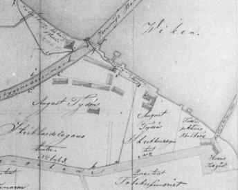
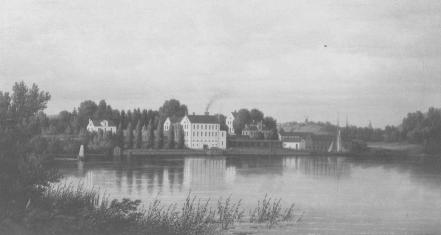
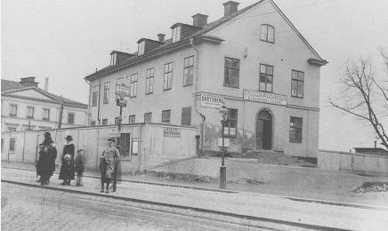
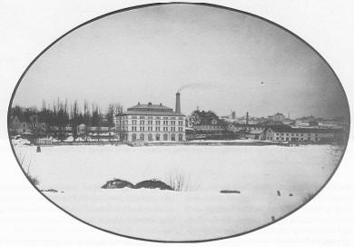
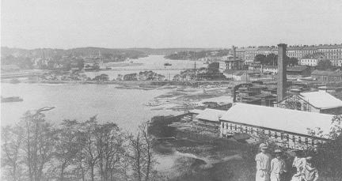
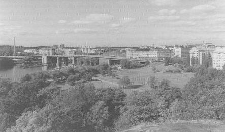
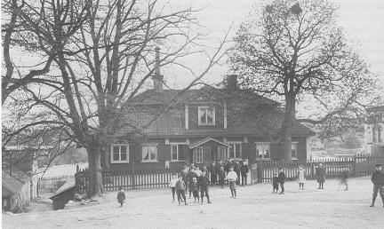

|
Staden tar över
Ur Sjutton Skansenhus berättar om Stockholm, Arne Biörnstad, 1998
Redan i januari 1881 knackade staden på dörren. Drätselnämnden hade förhandlat
med konkursförvaltarna och gjort ett förslag till köpekontrakt. För en summa som understeg
taxeringsvärdet önskade staden förvärva egendomen Jakobsberg med undantag av en del som Ludvig Tydén 1878 sålt till arkitekten Per
Johan Ekman. Beredningsutskottet föreslog stadsfullmäktige att genomföra köpet, därför att det för
staden vore viktigt att förvärva marken, som enligt stadsplanen behövdes för gator och bebyggelse.
Dessutom hindrade man därigenom att det på platsen bedrevs sådan fabriksrörelse som kunde skada
vattnet i Årstaviken, där staden tog sitt dricksvatten. Stadsfullmäktige beslöt att genomföra köpet.
Garveriet upphörde. Ludvig Tydén
flyttade med dottern Ida från Stockholm till släktingar i Hallstahammar, och alla anställda fick gå.
|


|
|
Staden sålde tomterna i det nyplanerade kvarteret Sågen mellan Brännkyrka- och Hornsgatorna. Då
förstördes de dittills så välskötta trädgårdarna på Hornsbruk 1 och 2. Kvarteret blev en väldig
byggplats och åren 1882-83 växte där upp 11 hyreshus.
Jakobsbergs olika hus hyrdes till en början ut som bostäder. 1882 bodde där 70 personer, bland annat
arkitekten Per Johan Ekman med familj. Han hade på
1830-talet varit elev under Fredrik Blom vid Konstakademien. Där lärde han sig bl.a. konsten att göra
flyttbara hus, vilket kan ha inspirerat honom till beslutet att vidareutveckla den kunskapen. Han
startade 1870 en snickerifabrik som specialiserade sig på att prefabricera och bygga sommarvillor i
tidens schweizerstil.
|
Den första fabriken gick över till andra ägare, men efter köpet av Jakobsbergs mark söder om
järnvägsbanken startade han här en ny fabrik, Mekaniska Snickeri Aktiebolaget Ligna, som dels framställde snickerier och guldlister, dels sågade och hyvlade upp trä
i en stor brädgårdsrörelse.1882 redovisas de anställda i en stor förteckning på 132 personer. Bland
dem känner vi igen flera av garveriets gamla medarbetare, som här kunnat få nya jobb.
|
|

|
|

|
|
1890 har Elisabeth Hebbes stenhus blivit dårsjukstuga. Andra utrymmen hyrdes av Frälsningsarmen,
Skandinaviska orgelfabriken med 24 anställda, en järnsängsfabrik med 7 anställda, en tvättinrättning, en smedja, ett litet snickeri, en vedgård och så ett antal
boende i vad som blev över.
Till det överblivna hörde den gamla mangårdsflygeln, som så småningom
kom till Skansen. Den hyrde sysslomannen vid Södermalms fattighus för sin svärmors räkning.
Svärmodern hette Carolina Christina Cedergren och var änka efter en skeppsbyggmästare, som sin
sista tid varit arbetsförman vid Ligna snickerifabrik.
|
|
Carolina Cedergren betalade alltså inte någon
hyra, och skaffade sig dessutom litet kontanter genom att hyra ut i andra hand.
1890 gjorde hon det till
Johan August Strindberg med familj, fast familjen föredrog att bo på annat håll, så att författaren blev
ensam. Han skrev den 16 januari 1890 till sin kollega Gustaf af Geijerstam att han Ȋr fullsutten med
obetalda räkningar, supit sedan andra januari och måst umgås med komprometterande folk, posterat i
gränder och gathörn, utanför pantlånekontor och procentare«.
Den mer eller mindre demolerade omgivningen med sin disparata verksamhet i en ruinerad
trädgård förmådde inte göra honom gladare, eller locka honom att berätta vad han såg. Han flyttade
snart därifrån.
|
|

|
|


|
|
Andra flyttade dit i stället. Vid sekelskiftet hade större delen av Ludvig Tydéns stora bygge blivit
porterbryggeri. Disponenten H. E. Carlsten skröt på helsida i adresskalendern 1905 om att han på
världsutställning i S:t Louis fått guldmedalj för utmärkt porter. Hos
honom arbetade 33 personer, men huset räckte också till för en bandfabrik med 20 anställda.
Sängtillverkningen hade vuxit och blivit Stockholms Nya Järnsängsfabrik. Vedhandlaren ökade
också sin rörelse i takt med alla hus som växte upp och behövde ved till kakelugnarna. Han hyrde
ut i andra hand åt en tvättstuga. Snickaren fortsatte i sin ensamma verkstad. Han fick en granne
med en ny sorts tillverkning - Aktiebolaget Kolfabriken. Där gjorde man s.k. borstar till
elektriska motorer. Frälsningsarmen övertog hela fru Hebbes hus och änkefru Cedergren fick
flera hyresgäster efter den orolige författaren. Nu lyckades hon trycka in 14 personer, varav några
hyrde i tredje hand.
|
|
Så fortsätter det med visst ombyte av verksamheter och hyresgäster. Den sista hyresgästen i
den gamla malmgårdsflygeln är Maria barnkrubba, som får lämna huset 1930, när det skänks av
staden till Skansen. Det är då den sista rest av Jakobsbergs malmgård som inte utsatts för några
stora omvandlingar utan bevarat mycket av sitt 1600-talsskick.
Åren 1930-36 revs allt övrigt och i kvarteret Tången byggdes 8 stora stenhus. Hörnhuset
Hornsgatan/Långholmsgatan ritades av Uno Åhren med Flamman i - Stockholms första funkisbio,
som drevs av Anna Johansson-Visborg, biografpionjär och kommunalpolitiker. Det hörnet ligger
precis på platsen för Elisabeth Hebbes hus.
|
|

|
|
|